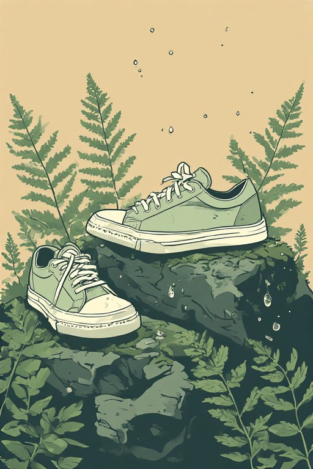
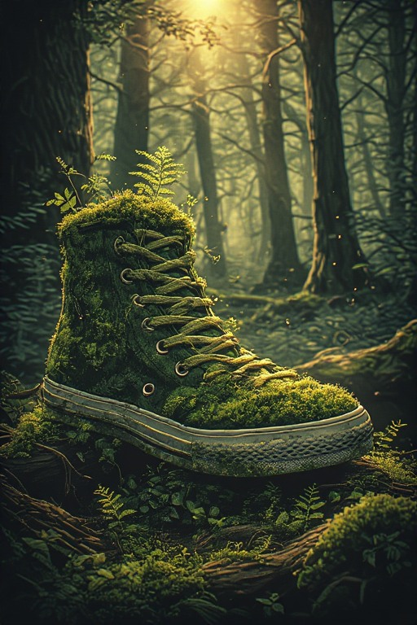

Gallery
AI-generated images




Scripts, videos, and images — built with AI tools and applied to real business contexts. Based in Gympie, Queensland.
I'm Alexander Pautasio, currently completing the Diploma of Artificial Intelligence at Greystone College. Originally from Argentina, now based in Gympie, Queensland.
Throughout this course I've developed hands-on skills in generating written content, videos, and images using a range of AI platforms — learning how to prompt effectively, evaluate outputs critically, and deliver results that work in real professional contexts.
A 200–300 word script for a "tips and tricks" segment at KWL Consulting's monthly all-staff meeting. Written using Claude with writing samples to match a specific voice and tone. Audience: consultants and operational staff across marketing, sales and finance.
A short AI-generated video presenting the key points from the Tips & Tricks script, created for KWL Consulting's intranet. Features an AI avatar and voiceover. Created with Synthesia as part of the formal assessment for NAT11287002 at Greystone College.
A 58-second text-to-video exploring how creators and businesses can produce professional social media content using AI tools — no camera, no studio required. Generated using Pictory's Script to Video feature with AI voiceover and stock footage.
A surreal, photorealistic lion image (800×800px) created for a KWL Consulting slide deck to demonstrate the potential of AI-generated imagery to clients. The lion is part of the company's branding. Generated using Adobe Firefly and Canva.
A vibrant, futuristic image (1000×800px) created to promote KWL Consulting's end-of-year event "Imagine" — celebrating the past 12 months and looking ahead. Designed to be energetic, creative and workplace-appropriate.
A series of personal experiments with AI image generation — exploring abstract figures, cosmic landscapes, and surreal compositions. Created using Adobe Firefly and other generative AI tools as part of developing prompting and visual direction skills.
58 seconds · Created with Pictory AI · Week 7, Diploma of Artificial Intelligence, Greystone College. Script written with ChatGPT, video generated using Pictory's text-to-video feature with AI voiceover and stock footage.
AI avatar video presenting practical AI tips for staff at KWL Consulting. Created with Synthesia as part of the NAT11287002 assessment at Greystone College. Features an AI-generated avatar and voiceover based on the written script.


Diploma of Artificial Intelligence student at Greystone College, Australia. Open to feedback, collaboration, and opportunities.